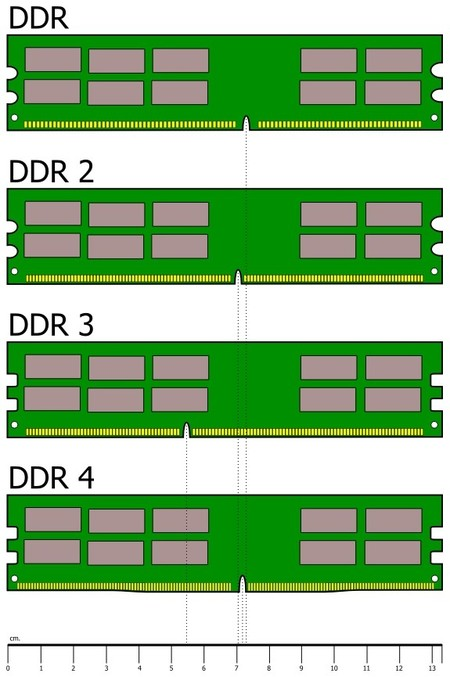

¿Que es la memoria RAM?
La famosa memoria RAM(esta mal dicho llamar almacenamiento/espacio como Memoria), es un componente importante como todos los demas, el cual este, se encarga de almacenar los programas que se esten ejecutando.
Por ej: Al abrir Chrome, este programa utiliza 800 MB, y asi otros programas. Si abriremos muchos programas, el CPU y la RAM se vuelven muy esenciales.

Aca se puede ver el consumo de algunas aplicaciones,
de el CPU (6 Nucleos y 12 Hilos) y la RAM (16gb),
estos consumos pueden variar dependiendo de
los componentes de cada computadora.
En resumen, la memoria RAM (Random Access Memory o Memoria de Acceso Aleatorio) almacena temporalmente los datos y las instrucciones que el CPU necesita mientras se ejecutan los programas. Estos datos se cargan en la RAM desde el almacenamiento permanente (como el disco duro o la unidad SSD) para que el CPU pueda acceder a ellos rápidamente. La información en la RAM es volátil/temporal, lo que significa que se borra cuando la computadora se apaga o reinicia (Esto no daña los programas ni nada).
Otro dato muy importante, es el tema de la velocidad de la RAM. Esta se diferencia por las siglas "DDR", como DDR3. Estas son las generaciones de la ram, las cuales tienen un cierto rango de velocidad.
Por ej: la primer generacion DDR, varia de 333MHZ a 400MHZ.
Actualmente se utilizan DDR4(de 2133MHZ hasta 3600MHZ).
La DDR5 que se usa poco por lo que vale y porque no cambia demasiado el rendimiento (3600MHZ hasta 5600MHZ).
Una ultima cosa, para diferenciarlas, mas que nada por su ranura, cada una tiene diferente posicion
